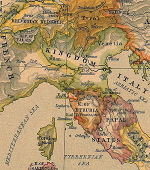

De: La Frikipedia, la enciclopedia extremadamente seria.
De: La Frikipedia, la enciclopedia extremadamente seria. De: La Frikipedia, la enciclopedia extremadamente seria.
| De la serie Países del planeta tierra: | |||||
| Papado del Vaticano | |||||
|---|---|---|---|---|---|
| |||||
| Lema: Si no puedes arrepentirte, no temas, unete a la Santa Inglesia Catastrofica Aprostatica de Roma y pronto te arrepentiras | |||||
| Himno: El Padre Nuestro
| |||||
| 
| |||||
| Capital | Ciudad del Vaticano | ||||
| Mayor ciudad | El cepillo de la basílica | ||||
| Lenguas oficiales | Latíni, Italini | ||||
| Gobierno | Dictadura Apóstolica Romana | ||||
| Papa | Frankie | ||||
| Área | Una plaza llena de curas pederastas | ||||
| Población | Hombres: menos de 1000: el Papa, sus conspiradores y algunos ateos. Mujeres: no censadas, se estima que 7 por cada hombre | ||||
| Moneda | Todas, aceptan Visa | ||||
| Zona horaria | GMT +0 | ||||
| Dominio Internet | .es (Espíritu Santo) y .cat (católico) | ||||
| Código telefónico | El teléfono es una herejía
| ||||
El Estado Vaticano, con algo menos de 0,5 kilómetros cuadrados es el único país del mundo con una densidad de Sumos Pontífices de más de 2 Papas/km², se encuentra situado entre Pinto y Valdemoro en un oasis del desierto del mar caribe y a 3 km de teletubilandia. Ostenta el poder un viejo sudaca corpulento que se hace llamar Francisco. Se trata del país más poderoso del mundo mundial y parte del extranjero. Un 99,9% de la pasta se encuentra repartida entre un montón de muertos de hambre de todo el mundo y otros planetas.
Numerosas cuantas bancarias, se han encontrado indicios de que varios Clubs de Intenciones de Estasis y Buenos Sentimientos por Caridad, han reclamado billones de billones a numerosos miembros de este estado...
Fundado en el 30000000 a.C por un tal Remador, que mantenía relaciones con lobas viciosas, creció rápidamente hasta llegar a lo que es hoy. El vicio y la perversión se han apoderado del Vaticano, dando lugar a la aparición de miles de casinos y clubes de Futbol Femenino por su vasto territorio.
Sus habitantes están sujetos a unas leyes especiales que los obligan a mantener un mínimo de -10 relaciones sexuales por hora y a meter mano a todo bicho viviente.
El juego oficial del país es el famoso Teto y su idioma el latín, variante del asturiano con tendencias bereberes.
El líder máximo, de una fealdad suma, es el más experimentado y ha llegado a mantener relaciones con ciertas criaturas subacuáticas como los Bushes.
Según los profetas, el estado Vaticano comenzará a expandirse desmesuradamente por el mundo hasta explotar y quedar reducido a un monton de piedras plantadas en medio de Roma, pero eso no lo verán nuestros ojos, por suerte....
En la actualidad, permanece como un lugar lleno de fe, pues no en vano, todo el que va se la deja ahí, lástima que como hay muy pocas mujeres siempre surgen tendencias raras en esos lugares como la fascinacion de los niños al puro estilo Michael Jackson.
Fue por ahi de los años dorados del Führer cuando Benito Mussolini decidio construir un megaparque de diversiones al estilo Orlando llamado Papalandia, ademas de ser parque tematico seria la grandiosa ubicacion de la Inglesia Catastrofica Aprostatica de Roma, los pobladores de roma en agradecimiento a Mussolini por esa parafernalia lo colgaron de ganchos de carnicero.
El vaticano se compone principalmente de altos jerarcas de la iglesia catolica, pero desde hace cientos de siglos la bestia o Lucifer se esconde ahi ya que sabe que aunque sospechen nadie lo buscaria.
Tambien se ha buscado cambiar su nombre a Ratzinger city pero varios obispos se han pronunciado en su contra alegando que seria mejor "Santa Vaticueva" (Vaticano+Cueva), no ha sufrido grandes cambios arquitectonicos desde el siglo XX, pero se planea construir un lugar educativo y tematico llamado: La Ciudad de los Niños, su principal iglesia es San Pedro, y es ahi en donde por primera vez se destilo la famosa bebida alcoholica Don Pedro.
Es un lugar muy difícil de habitar ya que esta aislado del mundo exterior además de que es dificil respirar por la elevada concentración de Az o Azufre además de que no hay mujeres, únicamente monjas por las que nadie se pelea.
El único ley está por encima de la de cualquier país, colaborando siempre para rectificar cuando nuestros gobiernos pierden la razón. Aunque abogan por la paz, generaron 3/4 partes de las guerras de la historia de la humanidad (no existieron hasta hace 2000 años, qué si no) aunque desean acabar con la pobreza sus ropajes cuestan millones, y más aun sus viviendas, instalaciones y templos (por no decir las pócimas para mantenerse siempre vivos). Se le atribuye la exterminacion de la raza Jedi, Punk, Emo, y demas sobras de la comida y cosas que salen por el culo.
Realmente, su Dios puede estar orgulloso de que algunos todavía se lo traguen (véase Mónica Lewinsky)
Respecto al deporte, no hay campos de fútbol, ni baloncesto, ni golf, ni nada de nada, y por supuesto, ningún equipo de ningún deporte. El unico deporte que se conoce aquí es el "sillonball", y se practicaria el "Zapping" si hubise televisión. Por el momento, para animar a la población al deporte, Ratzinger Z mandó construir un circuito de Fórmula 1, el Circuito Urbano del Vaticano, aunque está por ver si le permiten la entrada al mundial de Fórmula 1.
  Imperios de Europa Imperios de Europa
|
|---|
| Eslovaquia |
Autor(es):